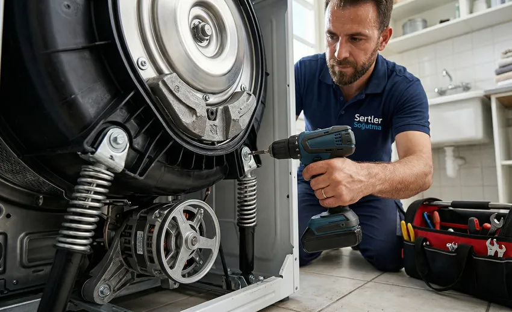

İndesit, yenilikçi yaklaşımı, kullanım kolaylığı ve dayanıklı mekanik yapısı ile dünya genelinde olduğu gibi Türkiye'de de evlerin en çok tercih ettiği beyaz eşya markaları arasında yer almaktadır. İtalyan mühendislik birikimini pratik ev çözümleriyle buluşturan marka; buzdolabı, çamaşır makinesi, bulaşık makinesi, kurutma makinesi ve fırın gibi geniş bir ürün yelpazesine sahiptir. Günlük yaşamı kolaylaştıran bu cihazlar, yüksek enerji tasarrufu ve bütçe dostu çalışma performansıyla dikkat çeker.
Ancak en kaliteli ve dayanıklı beyaz eşyalar dahi yoğun kullanım, zamana bağlı aşınmalar, kireçli su kullanımı veya elektrik şebekesinde meydana gelen ani voltaj dalgalanmaları nedeniyle zamanla arızalanabilir. Cihazlarınızın aniden işlevini kaybetmesi günlük ev düzeninizi altüst edebilir ve yaşam kalitenizi düşürebilir. Böyle anlarda bilinçsiz kişilerden destek almak yerine profesyonel bir teknik ekibe başvurmak cihazınızın ömrü açısından kritiktir.
Bölgede uzun yıllardır güvenin ve kalitenin simgesi haline gelen Sertler Soğutma, arızalanan veya bakıma ihtiyaç duyan tüm İndesit marka ev aletleriniz için hızlı, garantili ve kesintisiz çözümler sunmaktadır. Tarsus İndesit Servisi alanında uzmanlaşmış kadromuz ve tam donanımlı mobil araçlarımızla, evinizdeki konforun aksamaması için günün her anında görev başındayız.
Ev ortamında gıdaları taze tutan buzdolabının soğutmayı kesmesi veya kirli çamaşırların biriktiği anda çamaşır makinesinin durması acil müdahale gerektiren durumlardır. Bulaşık makinesinin suyu boşaltmaması ya da kurutma makinesinin ısıtma yapmaması gibi aksaklıklar da ev halkı için ciddi bir stres kaynağına dönüşebilir. İşte bu noktada Sertler Soğutma, profesyonel müdahaleleriyle anında devreye girmektedir.
Tarsus İndesit Servisi taleplerinize aynı gün içerisinde dönüş sağlayan firmamız, adresinize gelerek sorununuzu yerinde çözer. Cihazlarınızın atölyeye taşınma ihtiyacını minimuma indirerek zaman kaybını ve nakliye kaynaklı hasar risklerini ortadan kaldırıyoruz. Ekiplerimiz, arızayı doğru tespit ederek en pratik ve kalıcı tamir yöntemini kararlılıkla uygular.
İndesit beyaz eşyaların iç yapısında yer alan mikroişlemciler, motor sürücü kartları ve hassas sensörler özel bir teknik tecrübe gerektirir. Standart tamir metotları bu cihazlarda yetersiz kalabileceği gibi ürünün orijinal yapısına da zarar verebilir. Sertler Soğutma bünyesindeki teknisyenler, İndesit ev aletlerinin tüm modelleri, hata kodları ve teknik şemaları üzerinde uzmanlaşmış kişilerden oluşur.
Tarsus İndesit Servisi hizmetlerimizde gelişmiş arıza tespit cihazları kullanarak problemin kaynağını noktasal olarak saptıyoruz. Sadece yüzeysel semptomları değil, arızaya sebep olan kök nedenleri de ortadan kaldırarak cihazın yeniden bozulmasının önüne geçiyoruz. Bu sayede cihazlarınızdan uzun yıllar boyunca ilk günkü verimle yararlanmanızı sağlıyoruz.
Müşteri memnuniyetini her zaman ilke edinen Sertler Soğutma, şeffaf ve dürüst hizmet anlayışından taviz vermez. İşlem öncesinde arızanın sebebi, yapılması gereken tamir adımları ve maliyet detayları tarafınıza açık bir dille izah edilir. Onayınız alınmadan hiçbir ücretli işlem başlatılmaz ve sürpriz maliyetlerle karşılaşmanız engellenir.
Tarsus genelinde sunduğumuz kaliteli ve kurumsal teknik servis anlayışı, firmamızı bölgenin en çok tavsiye edilen ismi haline getirmiştir. Tarsus İndesit Servisi ihtiyaçlarınızda Sertler Soğutma uzmanlığını tercih ederek ev aletlerinizi emniyetle teslim edebilirsiniz. Cihazlarınızın performansını artırmak ve ömrünü uzatmak için kesintisiz teknik destek vermeye devam ediyoruz.
Güler yüzlü, saygılı ve işinin ehli kadromuzla Tarsus'un her noktasına mobil servis ulaştırıyoruz. İndesit eşyalarınızda beliren her türlü teknik sorunda bizi arayarak profesyonel yardım alabilirsiniz. Sertler Soğutma kalitesiyle Tarsus İndesit Servisi desteği almak bir telefon kadar yakınınızdadır.
Tarsus İndesit Servisi ile Güvenli ve Hızlı Onarım
Beyaz eşya onarım süreçlerinde güvenlik ve hız, tüketicilerin en çok dikkat ettiği iki temel unsurdur. Elektrik ve suyla bir arada çalışan ev aletlerinde yapılacak hatalı bir müdahale, evinizde yangın veya su baskını gibi ciddi riskler doğurabilir. Tarsus İndesit Servisi kulvarında hizmet veren Sertler Soğutma, gerçekleştirdiği tüm onarım işlemlerinde uluslararası emniyet standartlarına harfiyen uymaktadır.
Güvenli bir onarım süreci, cihazın elektrik izolasyonunun, şase topraklamasının ve sızdırmazlık elemanlarının detaylıca test edilmesiyle başlar. Sertler Soğutma teknisyenleri, evinizdeki güvenliği tehlikeye atacak hiçbir riski göze almaz. Dijital multimetreler ve kaçak akım ölçer cihazlar vasıtasıyla İndesit cihazınızın tüm emniyet parametreleri kontrol edilir.
Hızlı onarım anlayışımız ise zamanınızın ne kadar kıymetli olduğunun bilincinde olmamızdan kaynaklanır. Tarsus İndesit Servisi ekiplerimiz, arıza bildiriminiz alındığı andan itibaren harekete geçer. Gezici mobil servis araçlarımızda İndesit ürün grubuna ait en sık ihtiyaç duyulan yedek parçalar sürekli hazır bulundurulur.
Gezici araç stoğumuz sayesinde arızaların büyük bir kısmı ilk ziyarette ve cihaz yerinden kaldırılmadan adreste çözüme kavuşturulur. Günlerce teknik servis bekleme çilesi Sertler Soğutma ile sona erer. Cihazınızı aynı gün içinde yeniden çalışır vaziyette kullanmaya devam edebilirsiniz.
Onarım esnasında izlediğimiz adımlar cihazınızın orijinal yapısını korumayı hedefler. Sadece arızalı parça değiştirilmekle kalmaz, cihazın genel temizliği ve mekanik ayarları da gözden geçirilir. Tarsus İndesit Servisi kalitemizle cihazlarınız fabrikasyon performansına geri döndürülür.
Evinizin ve çalışma alanının temiz tutulması da hızlı ve güvenli hizmet ilkemizin ayrılmaz bir parçasıdır. Sertler Soğutma personelleri galoş ve koruyucu örtüler kullanarak hijyenik bir çalışma ortamı sağlar. İşlem bittiğinde alan derli toplu şekilde tarafınıza teslim edilir.
Tarsus genelinde güvenli ve hızlı teknik destek almak istiyorsanız firmamız en doğru adrestir. Tarsus İndesit Servisi taleplerinizde Sertler Soğutma kalitesini tercih ederek cihazlarınızı uzman ellere emniyetle teslim edebilirsiniz.
Aksaklık yaşayan İndesit beyaz eşyalarınız için zaman kaybetmeden bizimle iletişime geçebilirsiniz. Müşteri temsilcilerimiz randevunuzu anında planlayarak adresinize en yakın ekibi yönlendirecektir.
Sertler Soğutma İndesit Bakım ve Arıza Hizmetleri
İndesit marka cihazların arızalanmasını önlemenin ve kullanım ömrünü uzatmanın en etkili yolu periyodik bakımlardır. Sertler Soğutma, İndesit ürün ailesine özel geliştirdiği geniş kapsamlı bakım ve arıza hizmetleriyle Tarsus'ta fark yaratmaktadır. Tarsus İndesit Servisi kadromuz, cihazlarınızın ihtiyacı olan tüm koruyucu ve düzeltici işlemleri büyük bir titizlikle yerine getirir. Bütçe dostu pratik ev teknolojilerinizde oluşabilecek aksaklıklarda deneyimli bir Adapazarı İndesit servisi firmasından yardım alabilirsiniz.
İndesit buzdolaplarında sıkça karşılaşılan soğutmama, buzlanma yapma, fan motoru gürültüsü veya gaz kaçağı arızaları Sertler Soğutma tecrübesiyle çözülür. Tarsus İndesit Servisi teknisyenlerimiz, No-Frost gaz dolaşım hatlarını, kompresör performansını ve sensör değerlerini detaylıca ölçerek arızayı kökten giderir.
İndesit çamaşır makinelerinde beliren sıkma yapmama, aşırı sarsıntı ve gürültü çıkarma, su alma veya su boşaltma problemleri de uzmanlık alanımızdadır. Sertler Soğutma ekibimiz, tambur bilyalarından amortisörlere, tahliye pompalarından motor sürücü kartlarına kadar her aksamı yerinde tamir eder.
Bulaşık makinelerinde görülen suyu ısıtmama, bulaşıkları kirli bırakma, leke çıkarma veya alt kısımdan su sızdırma sorunları Tarsus İndesit Servisi standartlarımızla çözülür. Yıkama motorları, rezistanslar ve süzgeç filtre sistemleri garantili parçalarla yenilenir.
Kurutma makineleri ve pişirme grubu cihazlarda da Sertler Soğutma imzasıyla yüksek kaliteli hizmet sunulmaktadır. Kurutma makinelerindeki filtre ve ısı pompası temizlikleri ile fırınlardaki termostat ve rezistans değişimleri güvenle gerçekleştirilir.
Sunduğumuz bakım ve arıza hizmetlerinin temel amaçları şunlardır:
- Cihazın çalışma verimliliğini artırarak enerji tasarrufu sağlamak.
- Aşınmış parçaları erkenden tespit edip büyük arıza masraflarını engellemek.
- Cihazların iç aksamında biriken kireç, toz ve bakterileri temizleyerek hijyen sağlamak.
- Cihazın ses seviyesini düşürerek daha sessiz ve konforlu çalışmasını temin etmek.
Sertler Soğutma, İndesit cihazlarınızın performansını daima zirvede tutmak için çalışır. Tarsus İndesit Servisi hizmetlerimizden yararlanarak cihazlarınızın ömrünü uzatabilir ve yüksek faturaların önüne geçebilirsiniz.
Arıza bildirimleriniz ve bakım randevularınız için çağrı merkezimizi haftanın 7 günü 24 saat boyunca arayabilirsiniz. Sertler Soğutma uzman ekibiyle her an hizmetinizdedir.
Tarsus İndesit Servisi Uygun Fiyat Seçenekleri
İndesit Cihazınız İçin Hemen Randevu Alın
Orijinal yedek parça ve 1 yıl servis garantisiyle Tarsus genelinde aynı gün adresinizdeyiz.
Kaliteli teknik servis hizmeti alırken tüketicilerin en çok dikkat ettiği konulardan biri de bütçe dostu fiyatlandırmadır. Yüksek ve şeffaf olmayan tamir ücretleri tüketicilerin mağdur olmasına sebep olabilir. Sertler Soğutma, Tarsus ve çevresinde yürüttüğü Tarsus İndesit Servisi işlemlerinde son derece adil, makul ve ekonomik bir fiyat politikası benimsemektedir.
Firmamızda sabit ve gerekçesiz fiyat listeleri yerine; cihazın modeline, arızanın türüne, değişecek parçanın niteliğine ve harcanacak işçilik süresine göre şekillenen esnek bir fiyatlandırma modeli uygulanır. Müşterilerimize onaylamadıkları hiçbir ücret kalemi yansıtılmaz.
Onarım öncesinde Sertler Soğutma teknisyenleri cihazınızı yerinde inceler. Arızanın kaynağı belirlendikten sonra yapılması gereken tamir adımları ve maliyet tablosu müşteriye açıkça sunulur. Siz onay vermediğiniz sürece hiçbir ücretli tamir işlemi başlatılmaz.
Fiyat politikamızın temel ilkeleri şunlardır:
- Şeffaflık: Yapılacak her bir işlemin ve yedek parçanın maliyeti müşteriye net olarak izah edilir.
- Doğru Teşhis ile Tasarruf: Arızasız parçaların gereksiz yere değiştirilmesinin önüne geçilerek maliyet düşürülür.
- Orijinal Parça / Makul Fiyat: İndesit yedek parçaları direkt tedarik kanallarımız sayesinde uygun koşullarla sunulur.
- Garantili İşçilik: Tamir edilen parçalar garanti kapsamında olduğu için aynı arızanın tekrarlanması durumunda ek ücret talep edilmez.
Servis bedelimiz, adresinize gelen ekibin yaptığı detaylı arıza tespiti ve yol masraflarını kapsar. Onarım hizmetini onaylamanız durumunda bu tespit ücreti toplam tamir tutarından düşülmektedir.
Ödemelerinizi kolaylaştırmak adına kapıda nakit ödeme seçeneğinin yanı sıra mobil POS cihazlarımız ile tüm kredi kartlarına ve banka kartlarına güvenli ödeme imkânı sunuyoruz. Sertler Soğutma, bütçenizi korurken cihazlarınızı en iyi şekilde onarır.
Cebinizi yormadan İndesit eşyalarınızı güvence altına almak için Tarsus İndesit Servisi uzmanlığımızdan faydalanabilirsiniz. Bütçenize uygun teknik destek almak için bizimle dilediğiniz an iletişime geçebilirsiniz.
Sertler Soğutma Farkıyla İndesit Yedek Parça Garantisi
İndesit beyaz eşyalarının uzun ömürlü ve yüksek performanslı olmasının temel sırrı, üretiminde kullanılan kaliteli mühendislik parçalarıdır. Arıza durumunda kalitesiz veya yan sanayi parçaların kullanılması cihazın çalışma dengesini bozar ve kısa sürede daha büyük hasarlara yol açar. Sertler Soğutma, Tarsus İndesit Servisi kapsamında gerçekleştirdiği tüm parça değişimlerinde sadece tam uyumlu orijinal yedek parçalar kullanmaktadır. İklimlendirme ve beyaz eşya alanında Hatay bölgesinde kaliteli bir AEG servisi arayışında olan kullanıcılar gibi, Tarsus genelinde de Sertler Soğutma olarak kesintisiz çözümler sunmaktayız.
Orijinal yedek parça kullanımı, cihazınızın fabrika çıkışındaki enerji tasarrufu oranlarını, çalışma sessizliğini ve yıkama/soğutma performansını muhafaza etmesini sağlar. Sertler Soğutma güvencesi altında gerçekleştirilen parça değişimlerinde takılan yeni parça ve yapılan işçilik 1 yıl resmi garantimiz altındadır.
Yan sanayi ve kalitesiz parçaların kullanılması durumunda karşılaşılabilecek başlıca olumsuzluklar şunlardır:
- Cihazın ana kartında aşırı voltaj çekimine bağlı olarak yanmalar meydana gelebilir.
- Çalışma gürültüsü ve titreşim artarak mekanik aşınmaları hızlandırır.
- Enerji ve su tüketimi yükselerek elektrik ve su faturalarının artmasına sebep olur.
- Parça kısa süre içerisinde tekrar bozulur ve ek tamir masrafları çıkarır.
Sertler Soğutma, parça değişimi yapılan her Tarsus İndesit Servisi işlemi sonrasında müşterilerine resmi garanti belgesi ve detaylı servis formu takdim eder. Değiştirilen arızalı eski parça müşteriye gösterilerek süreç tam bir açık kalplilikle yönetilir.
Garanti süresi olan 1 yıl içerisinde, değiştirilen parçada herhangi bir üretim veya montaj hatası oluşursa, Tarsus İndesit Servisi ekibimiz hiçbir ek ücret talep etmeden adrese gelerek parçayı yenisiyle değiştirir.
Stoklarımızda İndesit marka buzdolapları, çamaşır makineleri, bulaşık makineleri ve fırınlara ait orijinal motorlar, pompalar, kartlar, rezistanslar ve sensörler mevcuttur. Sertler Soğutma farkıyla cihazlarınızın orijinalliğini koruyabilirsiniz.
Tarsus İndesit Servisi Deneyimli Tamir Kadrosu
Bir teknik servisin sunduğu hizmetin kalitesini belirleyen en önemli unsur sahadaki personelin bilgisi, tecrübesi ve tecrübesidir. Sertler Soğutma, İndesit teknolojilerine tam anlamıyla hakim, sertifikalı ve eğitimli teknisyenlerden oluşan geniş bir kadroya sahiptir. Tarsus İndesit Servisi hizmetlerimizi bu nitelikli ekibimizle gururla sunuyoruz.
Teknik personelimiz, İndesit markasının ürün altyapısı, elektronik kart mimarileri ve yeni nesil ev teknolojileri üzerine düzenli eğitimler almaktadır. Gelişen teknolojiye tam uyum sağlayan ekibimiz, en karmaşık arızaları bile pratik şekilde çözebilmektedir.
- Sadece teknik bilgi değil, aynı zamanda müşteri ilişkileri ve çalışma etiği hususunda da eğitilen Sertler Soğutma personellerinin öne çıkan özellikleri şunlardır:
- Emniyetli Çalışma: Onarım esnasında elektrik ve su güvenliği tedbirleri eksiksiz alınır.
- Hijyenik Yaklaşım: Evinize giren teknisyenlerimiz galoş ve koruyucu ekipman kullanır.
- Net İletişim: Arızanın sebebi ve yapılacak işlemler anlaşılır bir dille müşteriye aktarılır.
- Temiz İşçilik: Çalışma alanı temiz tutulur, işlem sonrası cihaz ve çevresi derli toplu teslim edilir.
Sertler Soğutma, Tarsus İndesit Servisi süreçlerinde amatör veya deneme-yanılma yoluyla yapılan müdahalelere asla izin vermez. Cihazınızın fabrika montaj standartlarına uygun olarak tamir edilmesi sağlanır.
Güler yüzlü, saygılı ve işinin ehli bir kadrodan hizmet almanın huzurunu yaşamak için bize başvurabilirsiniz. Müşteri memnuniyetimiz ekibimizin kalitesinden gelmektedir.
İndesit ev aletlerinizi güvenebileceğiniz tecrübeli ellere teslim etmek istiyorsanız doğru adrestesiniz. Sertler Soğutma uzman kadrosuyla Tarsus İndesit Servisi taleplerinizi karşılamaya her an hazırdır.
Sertler Soğutma İndesit Arıza Tespiti Ve Müdahalesi
Arıza tespitinin doğru yapılması, onarım sürecinin en kritik adımıdır. Hatalı teşhis konulan bir cihazda yapılan parça değişimleri sorunu çözmediği gibi kullanıcı için boş yere masraf yaratır. Sertler Soğutma, arıza tespiti hususunda son derece titiz ve bilimsel yöntemlerle çalışmaktadır.
Tarsus İndesit Servisi teknisyenlerimiz gelişmiş bilgisayarlı analiz cihazları ve dijital ölçüm aletleri kullanır. İndesit cihazların hafızasında biriken arıza kodları ve sistem parametreleri detaylıca okunur.
İndesit cihazlarda sıkça karşılaşılan arıza kodları ve teknik anlamları şunlardır:
- İndesit Çamaşır Makinesi F01 Hata Kodu: Motor triyak kısa devresi veya motor sürücü kartı arızası.
- İndesit Çamaşır Makinesi F05 Hata Kodu: Tahliye pompası tıkalı veya basınç anahtarı boş konumuna geçemiyor.
- İndesit Bulaşık Makinesi F01 Hata Kodu: Su sızıntısı emniyet sistemi aktif (alt tavan su almış).
- İndesit Bulaşık Makinesi F03 Hata Kodu: Su tahliye süresi aşıldı veya ısıtma rezistansı arızalı.
- İndesit Buzdolabı F02 Hata Kodu: Evaporatör sensör devresi açık veya kısa devre yapmış.
Sertler Soğutma ekibimiz sadece ekrandaki arıza koduna bağlı kalmaz; voltaj değerlerini, akım çekimlerini ve su basınçlarını da ölçer. Arızanın kaynağı kesin olarak saptanmadan parça değişimi adımına geçilmez.
Arıza tespiti tamamlandıktan sonra teknisyenimiz hazırladığı raporu müşteriye sunar. Arızanın nedeni, çözüm yolu ve maliyeti hakkında detaylı bilgi verilir. Müşterimiz onay verdiği an müdahale aşamasına geçilir.
Zamanında yapılan doğru müdahaleler cihazın motor veya anakart gibi en pahalı aksamlarının yanmasını önler. Sertler Soğutma nokta atışı müdahaleleriyle zaman ve kaynak israfını engeller.
İndesit cihazlarınızda beliren her türlü aksaklıkta Tarsus İndesit Servisi uzmanlığımıza başvurabilirsiniz. Sertler Soğutma sorunlarınızı adreste kalıcı şekilde çözer.
Hızlı Tarsus İndesit Servisi Müdahale Ekibi
Aniden bozulan bir beyaz eşya günlük planlarınızı altüst edebilir. Özellikle içindeki gıdaların bozulma riski bulunan buzdolabı arızalarında hızlı servis müdahalesi yaşamsal önem taşır. Sertler Soğutma, Tarsus genelinde kurduğu geniş mobil servis ağı ile acil servis çağrılarına jet hızıyla yanıt vermektedir. Evinizdeki farklı marka soğutucular veya şehir dışındaki evleriniz için kaliteli bir Adapazarı Altus servisi gereksiniminde uzman ekiplerden destek alabilirsiniz.
Gezici mobil servis araçlarımız Tarsus'un tüm merkez ve çevre mahallelerinde aktif olarak görev yapmaktadır. Çağrı merkezimize ulaşan kaydınız konumunuza en yakın araca anında iletilir. Tarsus İndesit Servisi müdahale ekibimiz kısa sürede adresinize varır.
Zaman yönetimi konusundaki hassasiyetimiz müşteri memnuniyetimizin en önemli kaynaklarından biridir. Verilen randevu saatlerine tam riayet ederek evinizde saatlerce servis beklemenizin önüne geçiyoruz.
Hızlı müdahale ekibimizin sağladığı temel avantajlar şunlardır:
- Anında Adrese Ulaşım: Tarsus'un her mahallesine aynı gün içinde mobil ekip sevk edilir.
- Yerinde Onarım: Cihazların %90'ı merkez atölyeye taşınmadan evinizde tamir edilir.
- Tam Donanım: Mobil araçlarımızda en sık ihtiyaç duyulan İndesit yedek parçaları hazır tutulur.
- Sıfır Nakliye Riski: Cihazın taşınması esnasında oluşabilecek çizilme ve darbeler engellenir.
Sertler Soğutma müdahale ekipleri, acil durum senaryolarında öncelikli rotalar oluşturur. Buzdolabı soğutmama veya su sızıntısı arızalarına öncelik verilerek mağduriyetiniz hızla giderilir.
İşinizden veya günlük programınızdan geri kalmadan arızalı cihazlarınızı hızlıca tamir ettirebilirsiniz. Sertler Soğutma sizlerin konforunu her zaman ön planda tutar.
Hızlı, pratik ve garantili bir teknik servis desteği almak istiyorsanız müdahale ekibimiz göreve hazırdır. Tarsus İndesit Servisi çağrı merkezimizi arayarak anında konumunuza ekip çağırabilirsiniz.
Sertler Soğutma İndesit Motor ve Rezistans Tamiri
Beyaz eşyaların en kritik ve maliyetli bileşenleri motorları ve ısıtıcı rezistanslarıdır. Buzdolabındaki kompresör, çamaşır ve bulaşık makinesindeki motorlar cihazın kalbini oluştururken; rezistanslar ise suyun istenen sıcaklığa ulaşmasını sağlar. Sertler Soğutma, İndesit motor ve rezistans tamirinde Tarsus'taki en tecrübeli teknisyen kadrosuna sahiptir.
İndesit çamaşır ve bulaşık makinelerinde zamanla kireçlenmeye bağlı olarak rezistans patlamaları yaşanabilir. Kireç kaplanan rezistans suyu geç ısıtır, aşırı elektrik çeker ve en sonunda sigorta attırır. Sertler Soğutma teknisyenleri arızalı rezistansları tespit ederek şu adımları uygular:
- Rezistansın direnç (ohm) değerleri multimetre ile ölçülerek arızası kesinleştirilir.
- Kireçlenmiş ve bozulmuş rezistans dikkatlice sökülür.
- Rezistans yuvası ve conta alanları tortulardan temizlenir.
- İndesit cihazın Watt ve voltaj değerlerine tam uyumlu orijinal sıfır rezistans takılır.
- Sızdırmazlık testleri ve elektrik güvenlik kontrolleri yapılarak montaj tamamlanır.
Motor arızalarında ise kompresör kilitlenmeleri, sargı kopuklukları veya kömür aşınmaları görülebilir. Tarsus İndesit Servisi ekibimiz, motorun tamir edilebilirliğini öncelikle değerlendirir. Motor kömürleri ve sürücü kart bileşenleri yenilenerek motorlar kurtarılabilmektedir.
Motorun tamir edilemeyecek kadar ağır hasar gördüğü durumlarda ise İndesit orijinal sıfır motor montajı gerçekleştirilir. Sertler Soğutma yapılan tüm motor ve rezistans değişimlerine 1 yıl resmi garanti vermektedir.
Motor ve rezistans yenilemesi yapılan cihazlar fabrika çıkışındaki çalışma performansına ve enerji tasarrufu seviyesine geri döner. Bu da faturalarınızda belirgin bir düşüş sağlar.
İndesit cihazınız suyu ısıtmıyorsa, sigorta attırıyorsa veya motor dönmüyorsa Tarsus İndesit Servisi çağrı merkezimizi arayabilirsiniz. Sertler Soğutma motor ve rezistans sorunlarınızı kalıcı olarak çözer.
Tarsus İndesit Servisi Çağrı Merkezi
Teknik servis sürecinin ilk ve en önemli halkası müşteri ile kurulan doğru ve hızlı iletişimdir. Anlaşılır, kesintisiz ve erişilebilir bir çağrı merkezi altyapısı müşterinin mağduriyetini en aza indirir. Sertler Soğutma, Tarsus İndesit Servisi çağrı merkezini en modern iletişim teknolojileriyle donatmıştır. Müşteri temsilcilerimiz günün her anında gelen arıza bildirimlerini ve randevu taleplerini büyük bir dikkatle kaydetmektedir. Beyaz eşya teknolojilerinde İtalyan mühendisliği cihazlarınız için profesyonel bir Adapazarı Ariston servisi arayışınız varsa yetkin servis desteği almanız büyük önem taşır.
Çağrı merkezimizi aradığınızda sizi karşılayan deneyimli personelimiz, öncelikle arızalanan İndesit cihazınızın modeli ve gösterdiği arıza belirtileri hakkında detaylı bilgi alır. Eğer sorun kullanıcı hatasından veya basit bir ayardan (örneğin kapağın tam kapanmaması veya su vanasının kapalı kalması) kaynaklanıyorsa, temsilcimiz telefonda yönlendirme yaparak sorunun anında çözülmesini sağlar. Bu sayede müşterilerimiz boş yere servis bekleme durumunda kalmazlar.
Telefonda çözülemeyen durumlarda ise derhal konumunuza en yakın mobil Tarsus İndesit Servisi ekibimiz sevk edilir. Seçtiğiniz gün ve saat dilimi sistemimize kesin olarak işlenir. Sertler Soğutma çağrı merkezi üzerinden sunulan hizmetlerimiz sadece arıza kaydı oluşturmakla sınırlı değildir. Önceden yapılmış olan tamirlerin garanti durumunu sorgulayabilir, periyodik bakım randevuları oluşturabilir veya yedek parça bulunabilirliği hakkında detaylı bilgi alabilirsiniz.
- Teknolojik yenilikleri yakından takip eden Sertler Soğutma, telefon aramalarının yanı sıra farklı dijital iletişim kanallarını da müşterilerinin hizmetine sunmaktadır:
- Web sitemizde bulunan canlı destek ve hızlı arıza bildirim formları üzerinden saniyeler içinde servis kaydı bırakabilirsiniz.
- WhatsApp destek hattımız üzerinden cihazınızın arıza videosunu veya ekrandaki hata kodunun görselini ileterek hızlı ön teşhis yapılmasını sağlayabilirsiniz.
- E-posta destek hattımız üzerinden kurumsal taleplerinizi ve toplu bakım isteklerinizi iletebilirsiniz.
- Sosyal medya kanallarımız üzerinden güncel bakım kampanyalarımızı takip edebilir ve hızlı mesaj gönderebilirsiniz.
Acil durum teknik servis taleplerinizde Tarsus İndesit Servisi çağrı merkezimiz anında aksiyon alır. Özellikle buzdolabı arızalarında gıdaların bozulmaması adına kaydınız "öncelikli servis" statüsüne alınarak saha ekibine iletilir. Sertler Soğutma olarak müşteri zamanına ve eşyasına verdiğimiz değeri bu hızlı iletişim organizasyonu ile kanıtlıyoruz.
Müşteri temsilcilerimiz servis sonrasında da sizi arayarak aldığınız teknik hizmetten memnun kalıp kalmadığınızı sorgular. Varsa öneri ve talepleriniz titizlikle not edilerek hizmet kalitemiz her geçen gün artırılır. Tarsus İndesit Servisi çağrı merkezimizi arayarak siz de hızlı, güvenilir ve kurumsal bir teknik servis desteği alabilirsiniz. Sertler Soğutma çağrı merkezi 7/24 hizmetinizdedir.
Sertler Soğutma İndesit Bakım İşlemleri
İndesit ev aletlerinin ve iklimlendirme sistemlerinin arızalanmadan, ilk günkü verimiyle uzun yıllar çalışabilmesi için belirli periyotlarla bakımdan geçmesi şarttır. Birçok kullanıcı cihazlar bozulana kadar bakım yaptırmayı ihmal eder; ancak düzenli bakım hem büyük arıza masraflarını önler hem de yüksek enerji faturalarının önüne geçer. Sertler Soğutma, İndesit cihaz türlerine özel detaylı bakım prosedürleri uygulamaktadır.
İndesit buzdolabı bakım işlemlerimiz kapsamında şu teknik adımlar izlenir:
- Buzdolabının arka kısmında yer alan kondanser (tozluk) radyatörünün özel vakum cihazlarıyla tozdan arındırılması.
- Evaporatör su tahliye kanalının ve tavasının temizlenerek tıkanıklıkların açılması.
- Kapı fitillerinin (contalarının) esneklik ve sızdırmazlık kontrollerinin yapılması.
- Soğutucu gaz basınç değerlerinin dijital manifold ile ölçülerek soğutma performansının teyit edilmesi.
- İç hava sirkülasyon fanının ve sıcaklık sensörlerinin çalışma değerlerinin test edilmesi.
İndesit çamaşır makinesi bakım işlemlerimiz kapsamında şu teknik adımlar izlenir:
- Deterjan kutusu ve su püskürtme kanallarının kireç ve birikintilerden temizlenmesi.
- Kazan alt tahliye pompasının ve filtresinin yabancı cisimlerden arındırılması.
- Su giriş hortum filtrelerinin temizlenmesi ve sızdırmazlık contalarının kontrolü.
- Amortisörlerin, motor kömürlerinin ve kayış gerginliğinin incelenmesi.
- Özel antibakteriyel solüsyonlarla kazan hijyen yıkamasının gerçekleştirilmesi.
İndesit bulaşık makinesi bakım işlemlerimiz kapsamında şu teknik adımlar izlenir:
- Alt ve üst yıkama fıskiyelerinin sökülerek deliklerinin kireçten temizlenmesi.
- Ana süzgeç ve mikro filtrelerin yağ çözücülerle temizlenmesi.
- Su yumuşatıcı rezonans ayarlarının ve tuz kutusu sensörünün kontrol edilmesi.
- Tahliye hortumu ve yıkama motoru basınç sensörlerinin test edilmesi.
Sertler Soğutma tarafından titizlikle yürütülen bu bakım işlemleri sayesinde İndesit cihazlarınızın beklenmedik anlarda bozulma riski %80 oranında azalır. Bakımı yapılan cihazlar daha az elektrik ve su harcayarak bütçenize doğrudan katkı sağlar.
Siz de İndesit eşyalarınızın bakım zamanının geldiğini düşünüyorsanız Tarsus İndesit Servisi çağrı merkezimizi arayarak bakım randevunuzu kolayca oluşturabilirsiniz. Sertler Soğutma planlı ve profesyonel bakım adımlarıyla cihazlarınızı korur.
Tarsus İndesit Servisi Kampanyalı Servis Paketleri
Evlerinde birden fazla İndesit marka cihaz bulunan veya periyodik bakımlarını düzenli yaptırmak isteyen müşterilerimiz için Sertler Soğutma özel kampanyalı servis paketleri hazırlamıştır. Müşterilerimizin bütçesini korumayı hedefleyen bu paketler, kaliteli teknik servis hizmetini çok daha ekonomik koşullarla almanızı sağlar. Tarsus İndesit Servisi bünyesinde sunduğumuz bu fırsatlar Tarsus halkı tarafından büyük ilgi görmektedir.
Kampanyalı servis paketlerimiz farklı müşteri ihtiyaçlarına göre çeşitlendirilmiştir:
- İki Cihaz Kombi Bakım Paketi: Evinizdeki İndesit buzdolabı ve çamaşır makinesinin aynı gün içinde detaylı periyodik bakımdan geçirilmesini kapsar. Tekli bakımlara kıyasla son derece avantajlı bir fiyat sunulur.
- Tüm Ev İndesit Paket Servis: Evinizdeki tüm İndesit beyaz eşyaların (buzdolabı, çamaşır makinesi, bulaşık makinesi, kurutma makinesi) genel sağlık kontrolü ve hijyenik bakımını içeren kapsamlı pakettir.
- Yıllık Koruyucu Bakım Anlaşması: Yılda iki kez düzenli ziyaretleri kapsayan bu paketle cihazlarınız yıl boyunca Sertler Soğutma güvencesi altına alınır. Paket sahipleri olası arızalarda işçilik ve parça indirimlerinden faydalanır.
- Taşınma ve Montaj Paketi: Ev değiştiren müşterilerimiz için İndesit cihazlarının sökülmesi, yeni adrese nakledilmesi ve doğru bağlantılarla yeniden monte edilmesini kapsayan avantajlı pakettir.
Sertler Soğutma olarak amacımız, kaliteli teknik servis hizmetini her bütçeye ulaştırmaktır. Kampanyalı paketlerimiz sayesinde cihazlarınızın bakımını ertelemek zorunda kalmazsınız.
Toplu bakımı yapılan cihazlar ilk günkü çalışma verimine kavuşarak yüksek elektrik ve su tüketiminin önüne geçer. Bu da paket maliyetinin kısa sürede fatura tasarrufuyla geri dönmesini sağlar.
Siz de evinizdeki İndesit cihazlar için en uygun kampanyalı paket seçeneğini öğrenmek ve randevu almak için Tarsus İndesit Servisi çağrı merkezimizi hemen arayabilirsiniz. Sertler Soğutma bütçe dostu fırsatlarıyla her zaman yanınızdadır.
Sertler Soğutma İndesit Yetkin Teknik Desteği
İndesit cihazlarının karmaşık mekanik ve elektronik yapısı, yüzeysel müdahalelerle çözülemeyecek kadar hassastır. Sertler Soğutma, Tarsus ve çevresinde İndesit cihazlarına yetkin teknik destek sunan lider firmadır. Tarsus İndesit Servisi kapsamında sunduğumuz yetkin teknik destek, arıza teşhisinden elektronik kart tamirine kadar geniş bir alanı kapsar.
Yetkin teknik desteğimizin temelini gelişmiş laboratuvar altyapımız ve uzman teknisyenlerimiz oluşturur. Sıradan tamircilerin "tamir edilemez, yenisini alın" dediği birçok arızalı parça Sertler Soğutma laboratuvarında mikro bileşen düzeyinde onarılabilmektedir.
Yetkin teknik destek sunduğumuz başlıca alanlar şunlardır:
- Elektronik Kart Tamiri: Voltaj dalgalanması sonucu yanan İndesit anakart üzerindeki entegre, triyak ve kondansatörlerin değiştirilerek kartın kurtarılması.
- Inverter Motor Sürücü Onarımı: Çamaşır makinelerinde tambur hareketini sağlayan sürücü kartların ve motor sargılarının onarımı.
- Soğutucu Gaz Kaçak Tamiri: Buzdolaplarında kapalı devrede oluşan kılcal gaz kaçaklarının hassas detektörlerle bulunup gümüş kaynakla kapatılması ve vakumlu gaz dolumu.
- Pres Kazan Tamiri: Çamaşır makinelerinde preslenmiş kazanların kesilerek rulman (bilya) değişiminin yapılması ve sızdırmaz şekilde yeniden birleştirilmesi.
Sertler Soğutma, yetkin teknik desteği ile müşterilerine ciddi bir maliyet avantajı sağlar. Yeni cihaz satın alma maliyetinin çok altında bir bütçeyle mevcut İndesit eşyalarınızı uzun yıllar çalışır durumda tutuyoruz.
Sunduğumuz tüm yetkin teknik işlemler 1 yıl resmi garantimiz altındadır. Müşterilerimiz yapılan her işlemin belgelendiğini bilerek içinin rahat olmasını sağlar.
İndesit cihazlarınızda yaşadığınız karmaşık ve çözülemeyen arızalar için yetkin ekibimize güvenebilirsiniz. Tarsus İndesit Servisi taleplerinizde Sertler Soğutma sizlere profesyonel ve kalıcı çözümler sunmaya hazırdır.
Sıkça Sorulan Sorular (S.S.S.)
Sertler Soğutma olarak Tarsus genelinde konuşlanmış mobil servis araçlarımız bulunmaktadır. Çağrı kaydınız alındıktan sonra bölgesel yoğunluğa bağlı olarak genellikle aynı gün içerisinde, belirteceğiniz saat diliminde adresinizde oluyoruz.
Evet. Sertler Soğutma bünyesinde gerçekleştirilen tüm yedek parça değişimleri ve işçilik uygulamaları 1 yıl süreyle firmamızın resmi garantisi altındadır. Garanti süresi boyunca değiştirilen parçada oluşabilecek teknik aksaklıklar ücretsiz giderilir.
F05 hatası su tahliye arızasını gösterir. Makinenin fişini çektikten sonra alt sağ kısımdaki pompa kapağını açarak filtreyi temizleyebilirsiniz. Sorun devam ederse Tarsus İndesit Servisi ekibimizi çağırabilirsiniz.
F01 hatası cihazın alt taban tavasına su sızdığını ve emniyet sisteminin aktifleştiğini gösterir. Cihazın fişini çekip su vanasını kapatmalı ve Sertler Soğutma teknisyenlerimizden yardım almalısınız.
Evet. Sertler Soğutma, İndesit cihazlarınızın uzun ömürlü ve verimli çalışması adına işlemlerinde sadece tam uyumlu ve orijinal yedek parçalar kullanmaktadır. Yan sanayi parçalar firmamızca kesinlikle tercih edilmez.
Arızaların büyük bir kısmı (%90 oranında) mobil ekiplerimiz tarafından evinizde yerinde onarılmaktadır. Ancak ağır mekanik arızalar, test gerektiren kart tamirleri veya kazan değişimleri gibi durumlarda cihaz onayınız alınarak merkezimize götürülebilir.
Sertler Soğutma müşterilerine esnek ödeme kolaylıkları sağlar. Ödemelerinizi kapıda nakit olarak veya teknisyenlerimizde bulunan mobil POS cihazları aracılığıyla kredi kartı/banka kartı ile güvenle yapabilirsiniz.
Işıkların yanması cihaza elektrik geldiğini gösterir. Soğutmama sorunu genellikle kompresör arızasından, soğutucu gaz kaçağından, fan motoru kilitlenmesinden veya anakart arızasından kaynaklanır. Sertler Soğutma teknisyenlerimizin adreste dijital ölçüm yapması gerekir.
Evet. Sertler Soğutma, 7/24 kesintisiz hizmet anlayışıyla çalışmaktadır. Cumartesi, Pazar günleri ve resmi tatillerde nöbetçi Tarsus İndesit Servisi ekiplerimiz acil servis talepleriniz için görev başındadır.
Aşırı sarsıntı ve yürüme sorunu genellikle cihazın zemin dengesizliğinden, amortisörlerin yıpranmasından veya kazan denge ağırlıklarının gevşemesinden kaynaklanır. Sertler Soğutma teknisyenleri amortisör değişimi ve ayak ayarı ile sorunu çözer.
Adresinize gelen Tarsus İndesit Servisi ekibimizin yaptığı detaylı arıza tespiti sonrasında tamir işlemini onaylamazsanız, sadece standart arıza tespit ücreti ödersiniz. Tamir işlemini onaylamanız durumunda ise tespit ücreti toplam tutardan düşülür.
Buzdolabının altından su sızması genellikle iç kısımdaki defrost su tahliye kanalının tıkanmasından kaynaklanır. Erinen buz suları dışarıdaki buharlaşma kabına akamadığı için dolap içine ve dışına sızar. Sertler Soğutma ekiplerimiz kanalı özel cihazlarla açar.
İndesit cihazlarınızın yılda en az bir kez detaylı periyodik bakımdan geçirilmesi önerilir. Düzenli bakım hem cihaz ömrünü uzatır hem de yüksek elektrik ve su tüketiminin önüne geçerek bütçenizi korur.
Firmamız Tarsus merkezdeki tüm mahallelerin yanı sıra bağlı belde, köy ve yakın sanayi bölgelerine kadar geniş bir coğrafyada Tarsus İndesit Servisi mobil hizmeti sunmaktadır.
Sertler Soğutma telefon numaralarımızı arayarak, WhatsApp hattımızdan mesaj atarak veya web sitemizde bulunan online randevu formunu doldurarak anında İndesit servis kaydı oluşturabilirsiniz.